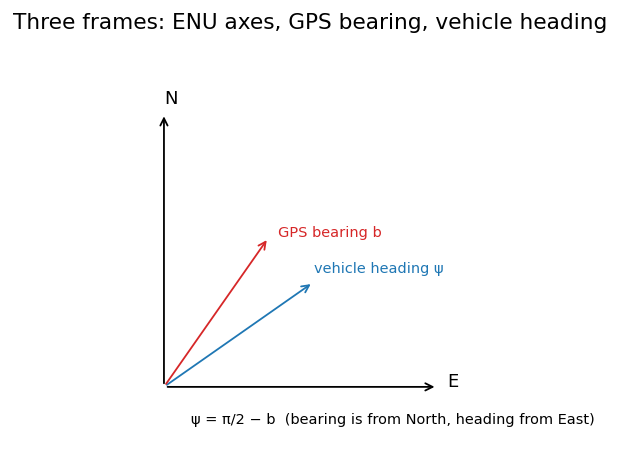
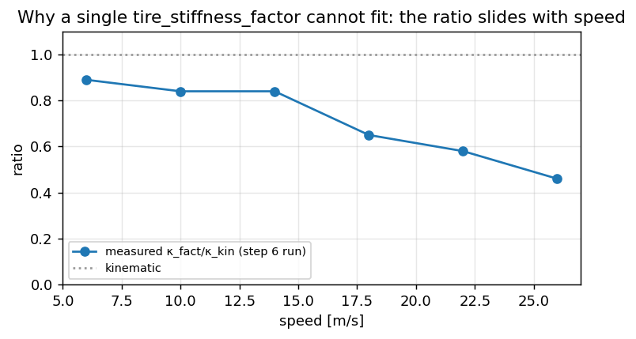

Localization: building an estimator one sensor at a time#
This chapter is written as a build, not as a description. We start with the cheapest possible estimate of
where the car is, find out what it cannot do, add one sensor, and repeat. Every step is a few lines you
can run, and every step corresponds to a switch in config.json — so you can turn a sensor off on the
real vehicle and watch the failure the text predicts.
step |
what we add |
what it fixes |
what it cannot do |
|---|---|---|---|
1 |
wheel speed + steering angle (bicycle model) |
a pose from nothing |
drifts without bound; needs the model to be right |
2 |
phone gyro as a yaw-rate measurement |
heading follows a sensor, not a model |
position still drifts; only helps if you fuse it correctly |
3 |
GPS position and course |
bounded position and heading |
hides errors in steps 1–2; nothing at all in a tunnel |
4 |
speed as a state, GPS velocity |
a correction that survives the next tick |
still cannot learn a scale error |
5 |
road roll from the lateral accelerometer |
separating a banked road from an understeering car |
0.65° after ten seconds of averaging, and no better; grade is still missing |
Read this chapter for the estimator, not for the steering
Nothing in the control path subscribes to localization/pose. The only subscriber is the debug egress,
and the lateral controller takes yaw rate straight from vehicle/chassis. That makes this the safest
place in the project to study an estimator: you can get it badly wrong and the car will not notice. It
also means every claim below had to be checked against GNSS rather than against “the car drove fine”.
Code anchors, in the order the chapter reaches them:
SpeedFilter(utils/speed_filter.h) — wheel speeds → speed and accelerationImuCalibrator/ImuCalibService— phone IMU → vehicle yaw rateGpsLocalProjector— lat/lon → East/North metersVehicleEKF/OnlineLocalizer/LocalizationService— fuse →localization/pose
Camera RPY for the Supercombo warp is a different story (Calibration); it only shares the mount prior with the IMU, and optionally feeds camera-odometry yaw rate into the EKF.
The switches you will use#
Every source is a separate key, because a fused estimate does not tell you which sensor is carrying it — and when several sources agree, a broken one hides behind the others.
"localization": {
"use_gps_position": true,
"use_gps_course": true,
"use_gps_velocity": true,
"use_imu_yaw_rate": true,
"use_chassis_yaw_rate": true,
"use_camera_odometry": true,
"use_bicycle_model": true
}
This is not a production feature — in the car you want all of them on. It is the instrument the rest of the chapter uses, and it is how the defect in step 2 was finally quantified: with GPS course on, the heading error was invisible; with it off, 38° in five seconds.
Step 0: frames, before anything else#
Half the bugs in this area are not estimation bugs, they are frame bugs. Fix the vocabulary first.
frame |
axes |
used for |
|---|---|---|
Local ENU |
\(x\) East, \(y\) North; origin = first GPS fix |
|
GPS bearing |
degrees clockwise from North (Android) |
course → ENU yaw |
Bicycle / vehicle |
planar yaw in ENU; \(\delta\) at the front axle |
EKF predict |
ISO vehicle |
\(y\) left+ |
camera mount prior |
Device / Supercombo |
\(y\) right+ |
lanes / camera odometry (see Coordinates) |
Same topic name, two payloads
Java publishes sensors/gps/location as a lat/lon proto. After proto_convert the same topic
name carries a typed GpsSample in ENU meters. Offline tools must know which side of the convert they
are reading. This has cost real debugging time more than once.
Step 1: the cheapest estimate — wheel speed and a steering angle#
Speed looks like the boring input. It is not, for two reasons: it scales the whole lateral chain (understeer enters as \(v^2\)), and the obvious way to compute acceleration from it is wrong.
Where it comes from#
ESP_02 carries four wheel speeds. The decoder averages them. Upstream then runs a two-state
(speed, acceleration) Kalman filter over that average — CarInterfaceBase.update_speed_kf in
flowpilot — and takes both vEgo and aEgo from the filter. We do the same, with one difference:
their gains are baked for a 100 Hz tick, ours are computed from the actual interval between frames,
because ESP_02 does not arrive on a metronome.
Why not just difference it#
Because the wheel-speed signal is quantised at 0.0075 km/h and the interval is ~10 ms. Differencing a quantised signal over a short interval amplifies the quantum by \(1/dt\). Measured on a real 28-minute run, the naive finite difference produced:

Fig. 6 Differentiating noisy wheel speed explodes the acceleration; a two-state filter recovers it (schematic of the measured RMS 4.16 → 0.062 m/s²).#
finite difference |
two-state filter |
|
|---|---|---|
|
−3.85 / +3.80 m/s² |
−0.57 / +0.68 |
extremes |
−61.5 / +74.5 m/s² |
−4.0 / +3.1 |
RMS step between samples |
4.16 m/s² |
0.062 |
A car cannot change its acceleration by 4 m/s² in 10 ms. The field was quantisation noise wearing an acceleration label. Nothing read it, which is the only reason it did no harm — the lesson being that an unused signal is not a harmless signal, it is a trap set for whoever uses it next.
The filtered speed differs from the raw average by 0.010 m/s at the median, so nothing was distorted; only the noise that was being differentiated is gone.
import math
import numpy as np
QUANTUM = 0.0075 / 3.6 # ESP_VL_Radgeschw_02 resolution, m/s
class SpeedFilter:
"""Two-state (speed, accel) Kalman over the wheel-speed average. Mirror of speed_filter.h."""
def __init__(self, accel_process_noise=1.5, speed_noise=0.05, jump=2.0, factor=1.0):
self.qa, self.r, self.jump, self.factor = accel_process_noise, speed_noise**2, jump, factor
self.inited = False
def update(self, v_raw, dt):
z = v_raw * self.factor
if not self.inited or not dt > 0 or dt > 0.5 or abs(z - self.v) > self.jump:
self.v, self.a = z, 0.0
self.pvv, self.pva, self.paa = self.r, 0.0, 1.0
self.inited = True
return
self.v += self.a * dt # predict
q = self.qa**2 * dt
pvv = self.pvv + 2 * dt * self.pva + dt**2 * self.paa + q * dt**2 / 3
pva = self.pva + dt * self.paa + q * dt / 2
self.pvv, self.pva, self.paa = pvv, pva, self.paa + q
s = self.pvv + self.r # update on speed only
kv, ka = self.pvv / s, self.pva / s
innov = z - self.v
self.v += kv * innov
self.a += ka * innov
self.pvv, self.pva, self.paa = (1 - kv) * self.pvv, (1 - kv) * self.pva, self.paa - ka * self.pva
def quantise(v):
return round(v / QUANTUM) * QUANTUM
# Steady 20 m/s with a little road noise: what does each method call "acceleration"?
rng = np.random.default_rng(0)
f = SpeedFilter()
naive, filtered, prev = [], [], None
for _ in range(3000):
z = quantise(20.0 + rng.normal(0, 0.02))
if prev is not None:
naive.append((z - prev) / 0.01)
prev = z
f.update(z, 0.01)
filtered.append(f.a)
print(f"naive : |a| up to {max(abs(x) for x in naive):7.1f} m/s^2")
print(f"filtered : |a| up to {max(abs(x) for x in filtered[500:]):7.2f} m/s^2")
The wheel radius nobody calibrated#
Wheel speed is a circumference times a rate, so a worn or under-inflated tyre biases the whole signal by a constant. Checked against GNSS Doppler speed — which is good to centimetres per second on a 3D fix, far better than any tyre — on two runs:
run 08-06 |
run 08-04 |
|
|---|---|---|
CAN wheel / GNSS Doppler |
1.0117 |
1.0120 |
residual after removing the scale |
0.101 m/s |
0.066 m/s |
scale at 5–10 / 10–15 / 15–20 / 20–25 m/s |
1.022 / 1.011 / 1.011 / 1.013 |
1.013 / 1.013 / 1.015 / 1.011 |
CAN reads 1.2 % high, and the scale is flat across speed bands. That flatness is the whole
argument: slip would grow with load and speed, a failing sensor would not be this consistent, but a
wheel radius is a constant. SpeedFilter::Config::wheel_speed_factor exists for it, defaulting to 1.0
so the correction arrives as a deliberate change.
A 1.2 % speed error is not a 1.2 % problem
Understeer compensation is \(\kappa = \delta / (L(1 + K v^2))\) — speed enters squared. And the model metric scale reported elsewhere in this project as 0.888 was measured against wheel speed; against ground truth it is 0.899. When your reference is itself biased, every derived number inherits it.
Step 2a: making the phone gyro usable#
The phone is clamped at whatever angle the mount allows. Raw gyro is in phone axes; the bicycle model needs vehicle yaw rate \(\dot\psi\).
Lock procedure (ImuCalibrator)#
Need chassis speed. Stationary: \(v < 0.5\) km/h.
Quiet: \(\big|\|a\| - g\big| \le 1.5\) m/s² and \(\|\omega\| \le 0.08\) rad/s.
Collect ≥ 50 accel and gyro samples →
orientation \(R\): rotate measured gravity onto vehicle down \((-Z)\);
bias \(b\): mean gyro.
While still quiet: bias EMA with \(\alpha = 0.02\).
Output (default
invert_yaw_rate=trueon Android):
Note what this procedure can and cannot give you. Gravity fixes two of the three angles — roll and pitch of the phone relative to the car. Yaw is not observable from gravity at all, which is why the mount prior exists and why the camera and the IMU share it.
Mount prior#
If calibration.camera.rpy_deg is set, the same roll/pitch/yaw seeds
and the service can publish yaw rate before a standstill lock (ready = has_prior ∨ orientation_locked).
import numpy as np
g = 9.81
def rotation_from_gravity(accel):
"""Rotate the measured gravity direction onto vehicle +down (-Z), Rodrigues from two vectors."""
a = np.asarray(accel, dtype=float)
a = a / np.linalg.norm(a)
target = np.array([0.0, 0.0, -1.0])
v = np.cross(a, target)
c = float(np.dot(a, target))
if np.linalg.norm(v) < 1e-9:
return np.eye(3) if c > 0 else np.diag([1.0, -1.0, -1.0])
vx = np.array([[0, -v[2], v[1]], [v[2], 0, -v[0]], [-v[1], v[0], 0]])
return np.eye(3) + vx + vx @ vx * (1.0 / (1.0 + c))
def yaw_rate_from_gyro(gyro, R, bias, invert=True):
w = R @ (np.asarray(gyro) - np.asarray(bias))
return float(-w[2] if invert else w[2])
R = rotation_from_gravity([0.2, 0.0, -g]) # nearly upright, slight pitch
bias = np.array([0.01, -0.02, 0.005])
gyro = bias + np.array([0.0, 0.0, 0.12])
print("R =\n", np.round(R, 3))
print("yaw_rate =", round(yaw_rate_from_gyro(gyro, R, bias), 4), "rad/s")
Until ready, there is no sensors/imu_yaw and localization falls back to the chassis yaw rate, or
to pure bicycle if there is none.
Drive-off tip
Sit still for a few seconds after ignition so orientation can lock. A bad prior plus no lock gives a wrong sign or a huge bias, and then the EKF’s agreement gate rejects the IMU outright (\(|\omega - v\tan\delta/L| < 0.35\) rad/s) — the filter goes quiet exactly when you needed it.
If you have not met a Kalman filter
From here the estimator is an EKF, in two half-steps per tick. Predict: push the state forward with the motion model and grow its uncertainty (covariance \(P\)). Update: compare a sensor reading to what the state predicts (the innovation), and correct the state by a fraction of that gap — the gain \(K\), which is large when the sensor is trusted more than the prediction and small when less. “EKF” just means the models are non-linear and are linearised (a Jacobian \(F\)) at each step. You do not need the derivation to follow this chapter — only: predict grows uncertainty, a measurement shrinks it, and the gain is how much you believe the measurement.
Step 2b: fusing the gyro, and the mistake worth studying#
State \([x,\ y,\ \psi,\ v,\ \dot\psi]^\top\) in ENU. Ticks on chassis, roughly every 10 ms.
Predict#
The interesting question is: which \(\dot\psi\)?
What the filter used to do, and why it was wrong#
The original code advanced heading with the bicycle model, \(\dot\psi_{\text{pred}} = v\tan\delta/L\), and then overwrote the yaw-rate state with that same value. Every step. So whatever the gyro had taught the filter was thrown away before the next measurement arrived, and the measurement could only reach heading through the cross-covariance \(P_{\psi\dot\psi}\) in a single step.
How much is “only through the cross-covariance”? It is easy to guess \(dt\) and be wrong — I did. Work it out: the yaw-rate update has gain \(K_4 = P_{44}/(P_{44}+R)\), and heading receives \(K_2 = P_{24}/(P_{44}+R)\). With \(F_{24} = dt\) the predicted cross term is \(P_{24} \approx dt\,P_{44}\), so
That is the wrong answer, and the reason is that \(P_{44}\) is itself shrunk by the previous update. Run the recursion numerically with the real \(Q_{44} = 0.05^2\) and \(R_{\text{imu}} = 0.02^2\) and the steady-state weight is \(dt\,(1-K_4) \approx 0.12\,dt\) — so heading came out as
Simulate before you assert. The analytic hand-wave and the recursion disagree by a factor of seven.
That split would be fine if the bicycle model were right. On this car it is not: the measured understeer transfer is \(\kappa_{\text{fact}}/\kappa_{\text{kin}} = 0.54\) at 22 m/s, so the kinematic prediction over-turns by \(1/0.54 = 1.85\), and heading rotated about 1.75× faster than truth. On a 30-second arc at 0.15 rad/s that is 450° instead of 258°.
Why did no run ever show it? Because updateGpsYaw hard-snaps the heading whenever the GPS course
disagrees by more than 0.5 rad. The filter was being dragged back into line by GPS several times a
minute, and the logs looked healthy. A defect masked by a correction is still a defect — it surfaces
the moment the correction is unavailable, which for GPS means tunnels, urban canyons, and cold starts.
What it does now#
Yaw rate is a state with its own random walk, heading integrates the state, and the bicycle model enters as a weak measurement with \(R_{\text{model}} = 0.15^2\) against the gyro’s \(0.02^2\). Weak because 0.15 rad/s is roughly how far apart the two are at 20 m/s and 10° of wheel. So:
the gyro is trusted, and its correction survives to the next step;
the model still fills gaps — if the IMU goes invalid while CAN keeps reporting steering, heading keeps moving instead of freezing;
model updates are counted separately (
model_update_count) so the diagnostics still say which sensor produced the heading.
setYawRateIsAState(false) restores the old behaviour exactly, which is how the two were compared.
Reproduce both, in twenty lines#
This is the whole chapter in one runnable block: drive a steady arc where the gyro tells the truth and the steering angle claims 1.85× as much, and watch the heading.
import math
import numpy as np
L, DT = 2.636, 0.01
UNDERSTEER = 0.54 # measured kappa_fact / kappa_kin at 22 m/s
class Ekf:
"""[x, y, yaw, v, yaw_rate] in ENU. yaw_rate_is_state=False is the old behaviour."""
def __init__(self, yaw_rate_is_state=True, r_model=0.15**2, r_imu=0.02**2):
self.x = np.zeros(5)
self.P = np.diag([1.0, 1.0, 0.05**2, 0.5**2, 0.05**2])
self.Q = np.diag([0.1**2, 0.1**2, 0.01**2, 0.5**2, 0.05**2])
self.as_state, self.r_model, self.r_imu = yaw_rate_is_state, r_model, r_imu
def predict(self, v_meas, steer, dt):
x, y, yaw, v = self.x[0], self.x[1], self.x[2], self.x[3]
model_rate = v_meas * math.tan(steer) / L if abs(steer) > 1e-3 and abs(v_meas) > 0.01 else 0.0
rate = self.x[4] if self.as_state else model_rate
self.x[0] = x + v * math.cos(yaw) * dt
self.x[1] = y + v * math.sin(yaw) * dt
self.x[2] = yaw + rate * dt
self.x[3] = v_meas
if not self.as_state:
self.x[4] = model_rate # <-- the mistake
F = np.eye(5)
F[0, 2], F[0, 3] = -v * math.sin(yaw) * dt, math.cos(yaw) * dt
F[1, 2], F[1, 3] = v * math.cos(yaw) * dt, math.sin(yaw) * dt
F[2, 4] = dt
self.P = F @ self.P @ F.T + self.Q
if self.as_state and model_rate != 0.0:
self.observe_yaw_rate(model_rate, self.r_model) # model as a weak measurement
def observe_yaw_rate(self, z, r):
H = np.zeros((1, 5))
H[0, 4] = 1.0
S = float((H @ self.P @ H.T).item()) + r
K = (self.P @ H.T / S).ravel()
self.x = self.x + K * (z - self.x[4])
IKH = np.eye(5) - np.outer(K, H)
self.P = IKH @ self.P @ IKH.T + r * np.outer(K, K)
def observe_gyro(self, z):
self.observe_yaw_rate(z, self.r_imu)
def drive_arc(as_state, seconds=5.0, v=22.0, steer=0.04, feed_gyro=True):
ekf = Ekf(yaw_rate_is_state=as_state)
ekf.x[3] = v
model_rate = v * math.tan(steer) / L
truth_rate = UNDERSTEER * model_rate
for _ in range(int(seconds / DT)):
ekf.predict(v, steer, DT)
if feed_gyro:
ekf.observe_gyro(truth_rate)
return math.degrees(ekf.x[2]), math.degrees(truth_rate * seconds), math.degrees(model_rate * seconds)
now, truth, model = drive_arc(as_state=True)
before, _, _ = drive_arc(as_state=False)
print(f"truth heading after 5 s : {truth:6.2f}° (gyro, the only honest witness)")
print(f"bicycle model would say : {model:6.2f}° (over-turns by 1/0.54)")
print(f"yaw rate as a state : {now:6.2f}° <- tracks the gyro")
print(f"old, overwritten : {before:6.2f}° <- tracks the model")
# And the gyro-less case: the model must still drive heading, not freeze it.
no_gyro, _, model5 = drive_arc(as_state=True, feed_gyro=False)
print(f"\nno gyro, as a state : {no_gyro:6.2f}° against the model's {model5:6.2f}°")
Run it and you get 51.7° of truth, 52.4° from the new filter, and 90.2° from the old one chasing the model’s 95.7°. One flag, 38° of heading error in five seconds — about 0.13 rad/s of error rate, which over a minute without GPS is the difference between being on your road and being on the next one. The gyro-less case comes out at 95.2° against the model’s 95.7°, so the fallback works: heading keeps moving rather than freezing.
Every gate in one table#
Measurements are cheap to add and expensive to trust, so each one is gated. These are the numbers as shipped:
measurement |
source |
gate |
noise |
|---|---|---|---|
yaw rate |
|
agrees with bicycle within 0.35 rad/s, or \(v<0.5\) |
\(R = 0.02^2\) |
yaw rate |
bicycle model |
\(\vert\delta\vert>0.001\) and \(\vert v\vert>0.01\) |
\(R = 0.15^2\) |
yaw rate |
|
small |
\(R \approx 0.05^2\) |
position |
GPS ENU |
innovation < 25 m; reseed above 50 m; 4 consecutive rejects also reseed |
\(R = 0.5\) m, softened when innovation is large |
course |
GPS bearing |
\(v>2\) m/s; reject \(\vert\Delta\psi\vert>1.2\) rad unless forced; hard snap above 0.5 rad |
\(R \approx 0.05\) |
velocity |
GPS \(v_x,v_y\) |
innovation < 15 m/s |
\(R \approx 1.0\) |
Two things to notice. First, the reseed path exists because a rejected measurement that keeps being rejected is not noise, it is a filter that has lost the plot — after four rejects it accepts reality rather than defending its estimate.
Second, the velocity row is the weakest of the six, and step 4 is about why. Its noise was assumed rather than measured (1.0 against a Doppler that is good to 0.1), and until speed became a state the prediction overwrote it about twenty times per GPS sample. Both are fixed now, and the scale is still not learnable — see step 4 for the reason, which is more interesting than the bug.
{kind=link}

Fig. 7 Three frames the chapter keeps straight: ENU axes, the GPS bearing (clockwise from North), and the vehicle heading — related by ψ = π/2 − b.#
Step 3a: GPS → local meters#
Origin \((\phi_0,\lambda_0)\) is the first valid fix. With Earth radius \(R = 6\,371\,000\) m:
Bearing (deg from North, clockwise) → ENU yaw (from East, counter-clockwise):
That \(\tfrac{\pi}{2} - b\) is worth burning into memory. Getting it backwards once produced a reported heading error of 103° in an analysis of a run whose real error was 0.3°, and an hour went into hunting a filter bug that did not exist.
Course is trusted only above \(v > 2\) m/s, and the standstill quirk (\(v < 0.5\) with a near-zero bearing) is rejected. Then \(v_x = v\sin b\), \(v_y = v\cos b\).
import math
R_EARTH = 6_371_000.0
def enu_from_ll(lat_deg, lon_deg, lat0_deg, lon0_deg):
dlat = math.radians(lat_deg - lat0_deg)
dlon = math.radians(lon_deg - lon0_deg)
y = dlat * R_EARTH # North
x = dlon * math.cos(math.radians(lat0_deg)) * R_EARTH # East
return x, y
def yaw_enu_from_bearing_deg(bearing_deg):
return (math.pi / 2 - math.radians(bearing_deg) + math.pi) % (2 * math.pi) - math.pi
print(enu_from_ll(55.001, 37.001, 55.0, 37.0)) # ~(64 m East, 111 m North) at φ₀=55°
for b in (0.0, 90.0, 180.0, 270.0):
print(f"bearing {b:5.0f}° → ENU yaw {math.degrees(yaw_enu_from_bearing_deg(b)):+7.1f}°")
Flat Earth is fine for a drive of a few kilometres. Crossing an origin reset (app restart) starts a new plane — do not stitch bags without re-anchoring.
Step 3b: what GPS buys, and what it hides#
Measured against GNSS on the night run (23.5 min, 3D fix throughout):
quantity |
agreement |
|---|---|
heading vs GNSS course |
0.3° median, 5.4° p99 |
speed vs GNSS |
0.17 m/s median |
Those look excellent, and they are — with the caveat that the heading number is partly a measure of how often GPS snapped the heading into place, and the speed number carries the wheel-radius bias described above. A filter compared against the thing that corrects it will always look good.
The honest test of a filter is what it does when a source is missing. That is what the arc simulation above is for, and it is why the yaw-rate fix mattered even though no logged run complained.
Step 4: making a correction survive, and finding out it still is not enough#
Step 3 gave bounded position and heading. It did not give a trustworthy speed, and the reason is the same shape of mistake as step 2 — worth seeing twice, because it is the most common way a Kalman filter gets quietly disabled.
updateGpsVel was being called. But predict did state_(3) = v_measured on every tick — about every
10 ms — while GPS velocity arrives every 0.2 s. So the correction was assigned over roughly twenty times
before the next one came. The fused speed was the wheel speed, to six decimals.
There was a second, independent reason: the update was given R = 1.0, an assumed 1 m/s of Doppler noise.
Measured, Doppler is an order of magnitude better — the residual against scale-corrected wheel speed is
0.066–0.101 m/s, and that includes both sensors and the 1 Hz sampling.
The two reasons interact in a way that is worth predicting before you run the code. In the old,
assigned mode nothing ever shrank the speed variance, so it grew without bound and the GPS gain
approached 1: the update moved the speed fully to the GPS value, and the next tick threw it away. Make
speed a state and the variance is now small — so with R = 1.0 the update barely registers at all. Only
with both fixed does it both land and persist.
Both are fixed: speed is a state (setSpeedIsAState), and gps_vel_R is \(0.1^2\).
# The two failure modes and the fix, in one experiment. True speed 20.0; CAN reports 20.24 (the measured
# 1.2 % scale); GPS velocity reports the truth once every 20 ticks.
class SpeedState:
"""The speed part of the EKF, with the old behaviour available for comparison."""
def __init__(self, as_state=True, q=0.5**2, r_wheel=0.1**2):
self.as_state, self.q, self.r_wheel = as_state, q, r_wheel
self.v, self.p = 20.0, 1.0
def predict(self, v_wheel):
if not self.as_state:
self.v = v_wheel # <-- the assignment that erased everything
self.p += self.q
return
self.p += self.q
k = self.p / (self.p + self.r_wheel) # wheel speed as a measurement
self.v += k * (v_wheel - self.v)
self.p *= 1 - k
def observe_gps(self, v_gps, r_gps):
k = self.p / (self.p + r_gps)
self.v += k * (v_gps - self.v)
self.p *= 1 - k
def run(as_state, r_gps, ticks=400, every=20):
f = SpeedState(as_state=as_state)
right_after = None
for i in range(ticks):
f.predict(20.24)
if i % every == 0:
f.observe_gps(20.0, r_gps)
right_after = f.v
return right_after, f.v
for label, as_state, r_gps in (("assigned, R=1.0 (as shipped before)", False, 1.0),
("state, R=1.0 (noise still assumed)", True, 1.0),
("state, R=0.01 (Doppler as measured)", True, 0.1**2)):
after, end = run(as_state, r_gps)
print(f"{label}: right after GPS {after:.4f}, one GPS period later {end:.4f}")
Read the third line carefully. The correction now lands — and by the time GPS speaks again, the wheel speed has dragged the estimate back to 20.24.
That is not a tuning failure, it is an identifiability one. The biased measurement arrives twenty times more often at the same assumed noise, so it wins between samples; and no pair of unbiased-noise assumptions can separate a constant bias on the frequent measurement from the truth. Lowering the wheel’s trust would throw away its genuinely low noise and make the estimate worse everywhere else.
The way out is to stop pretending the bias is noise and give it a state of its own: estimate the scale.
That is exactly what paramsd does for the vehicle parameters, and it is why step 5 is where this chapter
stops and that work begins.
The general lesson
Twice in one filter, a measurement was defeated not by bad maths but by an assignment in the prediction step. If you inherit an estimator and a sensor “seems to have no effect”, check first whether something downstream is writing its state.
Step 5: what is still missing#
Road roll exists now; grade does not.
RoadRollEstimatorreads it from the lateral accelerometer —sin(φ) = (a_y − f_y)/gwitha_y = −v·yaw_rate— subtracts the measured +3 °/g of suspension roll, and publishes it onlocalization/posewith its own uncertainty: 2.2° per sample, 0.65° after ten seconds of averaging, and no better than that because the residual is the road’s camber changing. Gate onroad_roll_std_deg, which starts at the same 10°paramsduses for “no usable roll”. Longitudinal grade is the same construction withf_xand is not built.Two things that cost time and are worth carrying: the sign of
chassis.yaw_rateis ISO (z up, left-positive) while the estimator frame is z down, and getting it backwards reports a body-roll gradient of 116 °/g rather than an error; and the standstill orientation lock used to overwrite the mount heading with a gravity-derived rotation, which is fine for yaw rate and destroys anything lateral.The wheel-speed scale is still hand-entered. GPS velocity is used and speed is a state, and that was not enough (step 4): the frequent biased measurement wins between GPS samples, and no noise assumption separates a constant bias from the truth. The scale needs a state of its own.
Learned vehicle parameters — built, and the result is step 6 below. It is not in this list of gaps because it is no longer one: the port exists, it is measured, and the measurement is why it ships disabled.
The dependency order is worth stating because it is easy to get backwards: GPS velocity into the filter →
an orientation and roll estimate → paramsd. Porting paramsd first leaves its roll input pinned at
zero, which works but gives up the one thing that separates road bank from vehicle understeer. That order
was followed, and step 6 is what happened when the roll input it insisted on met the error budget it had to
fit inside.
{kind=link}

Fig. 8 The achieved-vs-commanded curvature ratio slides with speed, so no single tire_stiffness_factor fits —
the reason paramsd exists (and why it needs more than one observable).#
Step 6: learning the parameters, and what the measurement said about it#
Everything so far estimated where the car is. This step estimates what the car is — and it is in this chapter, not in the lateral-control one, because the estimator’s inputs are the localizer’s inputs and its one non-obvious input is the road bank we built in step 5.
It is also the most honest thing in the book, because it ends with the feature switched off.
The premise, and how to check a premise#
Here is the reasoning that started the work. Comparing the curvature the steering angle implies against the curvature the yaw rate reveals, on one real drive:
speed |
\(\kappa_{\text{fact}}/\kappa_{\text{kin}}\) |
|---|---|
5–9 m/s |
0.89 |
9–12 |
0.84 |
12–16 |
0.84 |
16–21 |
0.65 |
21–26 |
0.58 |
26–32 |
0.46 |
The car turns steadily less than kinematics predicts as it goes faster. tire_stiffness_factor is one
number in a config file. One number cannot be 0.89 and 0.46. Therefore, the reasoning goes, it must become a
state — which is what upstream’s paramsd does.
Every step of that is true except the “therefore”. The constant does not carry the speed dependence; the model around it does. Recall from the lateral-control chapter:
with \(\text{slip} < 0\) for an understeering car, so the denominator grows with \(v^2\) and the same steering angle buys less curvature at speed. That is exactly the observed effect. So the question is not “does the ratio fall with speed” — it does — but “does it still fall after the model has had its say”.
import numpy as np
WHEELBASE_M = 2.636
C2F_FRAC = 0.45
MASS_KG = 1533.0
def slip_factor(tsf: float) -> float:
"""Transcribed from utils/vehicle_model.h. Negative for an understeering car."""
civic_mass, civic_wb = 1326.0 + 136.0, 2.70
civic_c2f = civic_wb * 0.4
a_f = WHEELBASE_M * C2F_FRAC
a_r = WHEELBASE_M - a_f
c_f = 192150.0 * tsf * MASS_KG / civic_mass * (a_r / WHEELBASE_M) / ((civic_wb - civic_c2f) / civic_wb)
c_r = 202500.0 * tsf * MASS_KG / civic_mass * (a_f / WHEELBASE_M) / (civic_c2f / civic_wb)
return MASS_KG * (C2F_FRAC * c_f - (1.0 - C2F_FRAC) * c_r) / (WHEELBASE_M * c_f * c_r)
# The measured ratio of actual to kinematic curvature, at the mid-speed of each band.
bands = np.array([7.0, 10.5, 14.0, 18.5, 23.5, 29.0])
ratio_kin = np.array([0.89, 0.84, 0.84, 0.65, 0.58, 0.46])
# What the model already explains, with the shipped constant.
sf = slip_factor(0.64)
model_gain = 1.0 / (1.0 - sf * bands ** 2)
ratio_model = ratio_kin / model_gain
print(f"slip_factor(0.64) = {sf:.6f}")
for v, rk, rm in zip(bands, ratio_kin, ratio_model):
print(f" {v:4.1f} m/s fact/kin {rk:.2f} fact/model {rm:.2f}")
print(f" spread: fact/kin {ratio_kin.max() - ratio_kin.min():.2f}, "
f"fact/model {ratio_model.max() - ratio_model.min():.2f}")
The spread collapses from 0.43 to 0.16, and what remains has no monotone trend. (That run uses each band’s mid-speed; computed per sample off the bag the residual ratios are 0.95, 0.94, 0.99, 0.87, 0.89, 0.80 — same picture.) A flat ~10 % shortfall is not a speed-dependent stiffness. It is a scale error, and a scale error is one number, which is exactly what a constant can be.
That did not stop the port — a filter that reports its own uncertainty is still worth having, and the 10 % still wants explaining. But it changes what success would look like.
The estimator#
Three states, and the measurement is the yaw rate:
Two details carry most of the value.
Use the controller’s own curvature function. Not a re-derivation of it, the same function. A parameter learned against a slightly different model than the one that consumes it is worse than a hand-tuned constant, because it looks principled.
Differentiate it numerically. Three states at CAN rate cost nothing, and the analytic derivative through
slip_factor — which divides by products of stiffnesses that themselves depend on the state — is the kind
of expression that is wrong for a month before anyone notices. The measurement function is the single source
of truth; a central difference cannot disagree with it.
G = 9.81
STEER_SIGN = -1.0 # positive CAN angle is a LEFT turn on this car; this frame is z-down
def predict_yaw(x, v, swa_deg, roll_deg):
"""Yaw rate in the z-down frame. The controller's own model, evaluated at the state x."""
tsf, ratio, offset = x
v = max(v, 1e-3)
delta = STEER_SIGN * np.radians(swa_deg - offset) / max(ratio, 1e-3)
kappa = np.tan(delta) / (WHEELBASE_M * (1.0 - slip_factor(max(tsf, 1e-3)) * v * v))
return v * kappa + G * np.sin(np.radians(roll_deg)) / v
class ParamsLearner:
def __init__(self, ratio_std=0.1, use_roll=False):
self.x = np.array([0.64, 15.7, 0.0])
self.p = np.array([0.5 ** 2, ratio_std ** 2, 1.0 ** 2])
self.q = np.array([0.005 ** 2, 0.00005 ** 2, 0.02 ** 2])
self.p_max = np.array([0.5 ** 2, max(ratio_std, 0.3) ** 2, np.inf])
self.lo = np.array([0.2, 12.0, -10.0])
self.hi = np.array([5.0, 20.0, 10.0])
self.r = 0.02 ** 2
self.use_roll = use_roll
self.n = 0
def update(self, v, swa_deg, yaw_rate_can, roll_deg, dt):
if v < 5.0 or abs(swa_deg) > 45.0:
return
yaw = -yaw_rate_can # ISO in (left-positive), z-down inside
roll = roll_deg if self.use_roll else 0.0
self.p = self.p + self.q * dt
h = np.zeros(3)
eps = np.array([1e-4, 1e-3, 1e-3])
for i in range(3):
xp, xm = self.x.copy(), self.x.copy()
xp[i] += eps[i]
xm[i] -= eps[i]
h[i] = (predict_yaw(xp, v, swa_deg, roll) - predict_yaw(xm, v, swa_deg, roll)) / (2 * eps[i])
k = (self.p * h) / (float(h @ (self.p * h)) + self.r)
self.x = np.clip(self.x + k * (yaw - predict_yaw(self.x, v, swa_deg, roll)), self.lo, self.hi)
self.p = self.p * (1.0 - k * h)
self.p = np.minimum(self.p, self.p_max) # a ceiling, not a pseudo-measurement — see below
self.n += 1
def valid(self):
"""Count, sigma, AND bounds. Each catches what the others miss."""
return (self.n >= 500 and np.sqrt(self.p[0]) < 0.15
and bool(np.all(self.x > self.lo + 1e-9)) and bool(np.all(self.x < self.hi - 1e-9)))
The trap upstream’s code sets for you#
paramsd keeps its slow parameters’ uncertainty from growing on long straights, and writes it as observe
the state with its own current value, at high noise. Copy that literally and you have a bug. The innovation
\(z - x\) is identically zero, so the update cannot move the estimate — it can only shrink the covariance.
Applied once per localizer message it is a harmless bound. Applied on every CAN sample at 100 Hz it shrinks
the covariance a hundred times a second while no information arrives, the real measurement loses all gain,
and the filter freezes near wherever it started. Measured on the synthetic recovery test: a true stiffness
of 0.45 came out as 0.515, pinned by the 0.64 it began at — and valid() read the shrunken sigma as
convergence after ten minutes of straight road.
So it is a ceiling: sigma may never exceed a bound, and only real measurements may reduce it. That is the
np.minimum line above.
Two failures the synthetic tests could not have found#
Both were found by replaying the shipped filter over a recorded drive, which is the argument for building the replay harness at the same time as the filter.
The steering sign. The port negated the yaw rate on the way in — ISO to z-down, correct — and never
applied this car’s vehicle.steer_sign, which the controller had always applied. On this car positive CAN
angle is a left turn: regressing the measured ISO yaw rate against the kinematic prediction gives a slope
of \(+0.824\) at a correlation of \(0.987\) over 28 636 cornering samples. So the prediction opposed the
measurement on every corner.
And valid() said yes anyway. The filter ran to whichever bounds shrink the predicted magnitude —
stiffness on its 0.200 floor, steer ratio on its 20.0 ceiling, identical in all four quarters of the drive.
A saturated state has stopped moving, so its sigma is small, so it looks exactly like convergence. The
valid() of the day checked the stiffness bounds and not the ratio’s, and let it through.
def drive(learner, corners, truth_tsf=0.64, truth_ratio=15.7, sign=STEER_SIGN):
"""Feed steady corners generated by a known car, in the ISO convention the CAN decoder produces."""
for swa, v in corners:
delta = sign * np.radians(swa) / truth_ratio
kappa = np.tan(delta) / (WHEELBASE_M * (1.0 - slip_factor(truth_tsf) * v * v))
yaw_iso = -v * kappa # z-down truth back to ISO, as ESP_02 reports it
for _ in range(60):
learner.update(v, swa, yaw_iso, 0.0, 0.01)
corners = [(swa, v) for _ in range(12)
for swa, v in [(6, 12.0), (-6, 12.0), (12, 15.0), (-12, 15.0),
(20, 22.0), (-20, 22.0), (3, 25.0), (-3, 25.0)]]
good = ParamsLearner()
drive(good, corners)
print(f"right sign: tsf {good.x[0]:.3f} ratio {good.x[1]:.2f} valid {good.valid()}")
# The same data, the filter's model given the wrong steering sign, and the loose ratio prior it shipped with.
flipped = ParamsLearner(ratio_std=0.5)
drive(flipped, corners, sign=-STEER_SIGN)
print(f"wrong sign: tsf {flipped.x[0]:.3f} ratio {flipped.x[1]:.2f} valid {flipped.valid()}")
print(f" sigma {np.sqrt(flipped.p[0]):.3f} — small, because saturation looks like convergence")
Note that valid() above reports False for the flipped run — that is the fixed check, the one that
tests every state against its bounds. The check of the day tested only the count and the sigma, and the
third print is why that passed: the sigma of the saturated stiffness is 0.010, comfortably under the 0.15
threshold, because a state that has stopped moving has a small covariance.
So bounds are not a safety net added for tidiness. They are the only thing that distinguishes a saturated estimate from a converged one, and a validity check that omits any state’s bounds has a hole in it exactly where the worst failure lives.
Why the road bank is not used, after all that work#
Step 5 built a road-bank estimate specifically because a banked road and an understeering car produce the
same lateral-acceleration signature, and paramsd cannot separate them without it. That argument is sound.
It is also, on this hardware, irrelevant — and the arithmetic that shows it is two lines.
for v in (10.0, 15.0, 25.0):
print(f"{v:5.1f} m/s: 1 deg of bank = {G * np.sin(np.radians(1.0)) / v:.4f} rad/s of yaw")
print("flat-model yaw residual on the real drive: 0.0065 rad/s")
print("bank estimate accuracy from a windscreen phone, at its floor: 0.65 deg")
One degree of bank at 15 m/s is 0.0114 rad/s — nearly twice the entire residual the flat model already has.
Our bank estimate is good to 0.65° after ten seconds of averaging and no better, because past that the
residual is the road’s camber genuinely changing. So the input carries more error than the error it was
meant to remove. Feeding it in raised the residual from 0.0065 to 0.0104 rad/s, a 60 % degradation, and
params_use_roll ships false.
This is worth sitting with. The dependency argument — “the learner needs roll, so build roll first” — was correct about interfaces and silent about accuracy. Whether \(B\) is good enough for \(A\) has an answer only after \(B\) exists and is measured against \(A\)’s error budget. Here the budget was 0.0065 rad/s and the input carried 0.0114.
What the drive actually said#
configuration |
learned tsf |
drift across quarters |
yaw residual vs shipped constants |
|---|---|---|---|
ratio prior 0.5, bank fed in |
0.374 |
— |
3 % worse, and |
ratio prior 0.1, bank fed in |
0.517 ± 0.026 |
0.462 → 0.368 |
0 % |
ratio prior 0.1, flat road |
0.342 ± 0.022 |
0.411 → 0.360 |
14 % worse |
best single constant, 0.55 |
— |
— |
4.1 % better |
The degeneracy is the story of the first two rows. Stiffness and steer ratio both scale predicted curvature, and over one drive’s speed range their signatures differ too little for a yaw-rate measurement to separate them — so with a loose prior the filter slides along the ridge rather than picking a point on it. Tightening the prior to 0.1 is not timidity: a steering rack’s ratio is a mechanical fact known to a few percent, and that knowledge belongs in the prior. A state the data cannot separate from another state does not become observable by being declared a state.
And the last row is the humbling one. The best single constant on this drive is 0.55 against the shipped 0.64, worth 4.1 %, and the curve around it is flat: 0.50 → 0.00636, 0.55 → 0.00625, 0.64 → 0.00652 rad/s. The shipped hand-tuned number was already nearly optimal.
So it ships behind two flags, both off#
localization.learn_vehicle_params runs the estimator. lane_keep.use_learned_params lets the controller
read it. Separate, on purpose: the learner can publish for an entire drive while the controller keeps its
constants, which is how a learned value earns the right to be used. One flag for both would make the first
drive that tests the estimator also the first drive that trusts it.
Even with both on, the controller takes the estimate only while learned_params_valid holds, and falls back
to the configured constants the moment it does not — so losing validity walks the parameters back rather
than freezing them at whatever the estimator last believed.
That is the whole feature: built, tested, instrumented, published, replayable, and disabled. A negative result you can point at with numbers is a finished piece of work.
How this relates to lane-keep#
The lateral MPC and Pure Pursuit do not need global ENU to steer — they track vision/path in the
device frame. Localization matters for:
bag maps and track overlays in the visualizer (the offline map-match vertical was deleted on 2026-08-21; the
.admapreader survives as the visualizer backdrop);sanity checks — GPS against pure odometry divergence;
any future map-relative feature;
learning the vehicle parameters the controller uses — step 6, and the one consumer that turned out not to want the roll estimate after all.
A wrong IMU sign will not invert the steering while lane-keep ignores pose — but it will poison every
consumer of localization/pose and quietly corrupt offline forensics.
Config checklist#
key / node |
role |
|---|---|
|
enable services |
|
bicycle \(L\) |
|
wheel-radius correction (1.0 shipped, 0.988 measured) |
|
speed filter tuning |
|
IMU mount prior (and camera warp prior) |
(code defaults) |
GPS \(R_{\text{pos}} = 0.5\) m, update every 0.2 s, camera odometry on |
Exercises#
Project two GPS fixes 1° apart in latitude at your city’s \(\phi\); compare \(y\) with 111 km. Then do it in longitude and explain the \(\cos\phi_0\).
Convert bearings \(\{0,90,180,270\}\) to ENU yaw and sketch them. Now deliberately use \(b - 90°\) instead of \(90° - b\) and see what a plot of a real drive looks like.
Derive \(K_2\) for the yaw-rate update analytically, then run the covariance recursion numerically for 200 steps with \(Q_{44}=0.05^2\), \(R=0.02^2\). Explain the factor of seven.
In the arc simulation, sweep
r_modelfrom \(0.02^2\) to \(1.0^2\) and plot the final heading error. At what point does the model stop mattering, and what have you given up when it does?Add a GPS course update every 100 steps to the old (
as_state=False) filter and show that the heading error stops growing. This is the masking effect — reproduce it, then remove GPS and watch it return.On a bag: measure the time from start until
sensors/imu_yawfirst appears, and correlate it with the windows where speed is about zero.Take a bag, feed
v_ego_rawthroughSpeedFilterwithfactor = 1.0and0.988, and compare the integrated distance against the GPS track length. Which factor gets you closer?
On your own recording#
Everything above runs unchanged on a bag you record yourself (see Bags, Record your own bag) — and gains from it: your GPS has your multipath and your tunnels, your IMU carries the phone’s real mounting, and every claim is checked against a track you can verify from memory. Load your topics and walk the five steps again:
# not-runnable — the loading pattern; the estimator code is the chapter's own
from pathlib import Path
from vis.bag_io import load_topic_messages
session = Path("../adas_logs/<your-session>")
gps = load_topic_messages(session, "sensors/gps/data")
imu = load_topic_messages(session, "sensors/imu")
print(len(gps), "GPS fixes,", len(imu), "IMU samples")
Two expectations to calibrate first: a phone GPS in the open is a few metres of scatter at 1 Hz — good enough to bound drift, useless for lane-level anything. And a passenger recording has no wheel odometry, so step 1 runs on GPS-differenced speed instead — the substitution this chapter already discusses when it makes speed a state. If you recorded on foot, the “vehicle frame” assumption is gloriously violated, and the yaw-lock step shows exactly how the calibrator copes, or refuses.
Next: Camera calibration